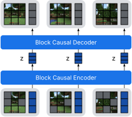
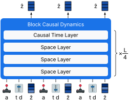

Two Roles in a World Model
AIR's specialization carries over from puzzles to a recurrent world model
Draft, Nov 8, 2026TL;DR: In AIR, one network updates two latent states, and only one of the two updates sees the input. On puzzles, that alone was enough for the two states to take on different jobs. Here we use AIR as a world model that predicts video of simulated robots one step at a time, and the same split shows up again, both on a single task and in a model trained on all 18 tasks of DeepMind Control. Two caveats:
- To remember what a single frame cannot show, such as how fast something is moving, the model needs gradients through time. AIR's usual one-step gradient does not provide them.
- One shared network does as well as two separate ones on a single task, but falls behind once the model has to learn all 18.
Setup
A world model learns how an environment behaves. Given what an agent has seen so far and the action it takes, the model predicts what the agent will see next. Once it is good enough, the agent can practise inside the model instead of in the real environment. Dreamer 4 is a recent example, and it has two parts. A tokenizer compresses each video frame into a handful of latent tokens. A large dynamics Transformer then predicts the next frame's tokens from the actions and the tokens of earlier frames, attending over all the frames that came before.


We keep Dreamer 4's tokenizer, frozen, and replace its Transformer with AIR. As a reminder, AIR has one network that updates two latent states, zL and zH, and only the update of zL sees the input. On puzzles the input is the same at every step. A world model is harder in three ways: a new frame arrives at every step; some things, like velocity, cannot be read off any single frame and have to be remembered; and when the model imagines the future, there are no frames at all.
At each time step, we combine the current frame's latent tokens, the action and a task token into one input xt. The network then runs six updates (L, L, H, L, L, H), and we read the prediction of the next frame from zH. The two states are then handed to the next time step. There is no attention over past frames, so these two states are the model's only memory. We compare three ways of wiring a step:
We train every model in two ways: with AIR's one-step gradient, which stops the gradient at the end of each time step, or with backpropagation through time (BPTT) over 32 steps. For clarity, the animation shows one L-update followed by one H-update; the real model runs six updates per step (L, L, H, L, L, H). Model size and optimizer are AIR's defaults; we did not tune anything for accuracy.
1. The two states take on different roles
How can we tell whether the two states do different jobs? The prediction head is trained to read the next frame from zH. We apply the same head to zL as well. If the two states held the same information, the head would do about equally well on both. We call zL's error divided by zH's the readout ratio: a value near 1 means the states are interchangeable, and a large value means only zH holds the prediction.
In air, reading the prediction from zL is hundreds of times worse than from zH with BPTT, and still more than 15 times worse with the one-step gradient. In sym, where the frame goes into both updates, the ratio stays close to 1 in every seed. The two-network models split just like air. So the split does not come from giving each state its own weights. It comes from letting only one update see the frame.
This does not mean zL is empty. A linear probe can still read the simulator state from it quite well. It just keeps that information in a form the prediction head cannot use, much like the scratchpad role zL played on puzzles.
Cup-catch is a single task, so we also trained one model on all 18 tasks of the DMC Visual Control suite, with about 18 times as much data. The picture is the same on every task:
2. Memory needs gradients through time
Splitting the work is one thing; remembering is another. With AIR's one-step gradient, the loss at one time step never sends a learning signal back to earlier steps. On puzzles that is fine, because the puzzle is shown again at every step and nothing has to be carried over. In a world model it matters. A single frame shows where things are but not how fast they move, so the model has to carry that forward itself, and nothing in the one-step gradient tells it to.
To measure this, we fit a linear probe that predicts the true simulator state (positions and velocities) from zH while the model is imagining, and test it on episodes it was not fit on. If zH only knew what the current frame shows, it would score about the same as this probe applied to the frame itself, marked by the dashed line.
With the one-step gradient, every model stays fairly close to that line: zH knows only a little more than the current frame shows. With BPTT, air reaches an R² of 0.81, and its error on the first predicted frame drops about 9 times. The 18-task models follow the same pattern: air trained with BPTT reaches 0.50, while the one-step models reach 0.38–0.39 and the frame alone 0.40.
3. Accuracy
Finally, how good are the predictions? The table shows the error when the model sees 8 frames and then imagines the next 24 on its own. All models here are trained with BPTT.
| BPTT model | cup-catch | 18 tasks |
|---|---|---|
| air | 0.0201 | 0.0517 |
| sym | 0.0289 | 0.0699 |
| hrm_half (two networks, same parameters) | 0.0211 | 0.0403* |
| hrm (two networks, 2× parameters) | 0.0303 | 0.0457* |
| repeat the last frame | 0.236 | 0.165 |
Mean squared error in latent space, lower is better. Mean over 3 seeds; * one seed so far.
Sending the frame only into L pays off: air's error is 30% lower than sym's on cup-catch and 26% lower on the 18 tasks. The comparison with separate networks is more mixed. On cup-catch, one shared network does about as well as two half-size networks with the same number of parameters (0.0201 against 0.0211). On the 18 tasks it does not, and hrm_half is 22% more accurate. The two-network results on 18 tasks come from a single seed so far, but air's three seeds differ by only about 7%, so a gap this large is unlikely to be noise.
How does this compare to the Transformer we replaced? We also trained a causal Transformer like Dreamer 4's dynamics model, without its noise objective, using twice air's parameters and the same data and number of steps. A Transformer has no state of its own to imagine in, so it has to feed each prediction back in as the next frame. To compare fairly, we run our models the same way here.
| Cup-catch, fed back | 1st frame | 24th frame | all 24 |
|---|---|---|---|
| air | 0.0036 | 0.0471 | 0.0331 |
| hrm_half | 0.0038 | 0.0486 | 0.0355 |
| sym | 0.0049 | 0.0543 | 0.0423 |
| Transformer (2× parameters) | 0.0033 | 0.0677 | 0.0394 |
Same error as above, mean over 3 seeds. The recurrent models are trained with BPTT.
The Transformer is as good as air on the first frame, but its error grows faster the further it imagines. By the 24th frame it is 44% higher than air's, and every Transformer seed is worse than every air seed. Feeding predictions back costs air something too (0.0331, against 0.0201 when it imagines in its own state), so not having to re-read its own outputs is part of what the recurrent state buys. We have only run this on cup-catch, and we did not tune the Transformer.
What it means
- Where the input enters decides the roles. The split we saw on puzzles survives continuous dynamics, changing frames and imagination, and it does not need separate weights.
- How the gradient flows decides what gets remembered. HRM, TRM and AIR all train with a one-step gradient, and they all work on tasks where the input stays the same. Once the input changes over time, that gradient no longer teaches the model what to keep.
- Sharing one network has a cost when there is a lot to learn. We cannot yet tell whether the cost comes from sharing the weights or from each update being twice as deep as in hrm_half.
Next steps
- Train air with a 2-layer block, which matches hrm_half's depth and compute, to tell those two explanations apart.
- Run the Transformer baseline on the 18 tasks as well.
- Put the model to use the way world models are meant to be used: for planning, or for training a policy inside it.